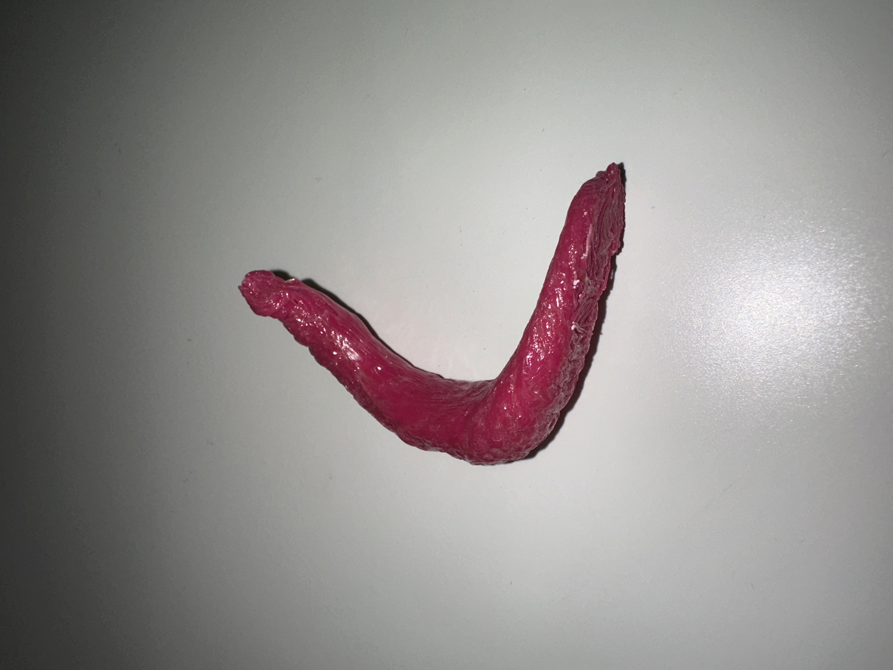
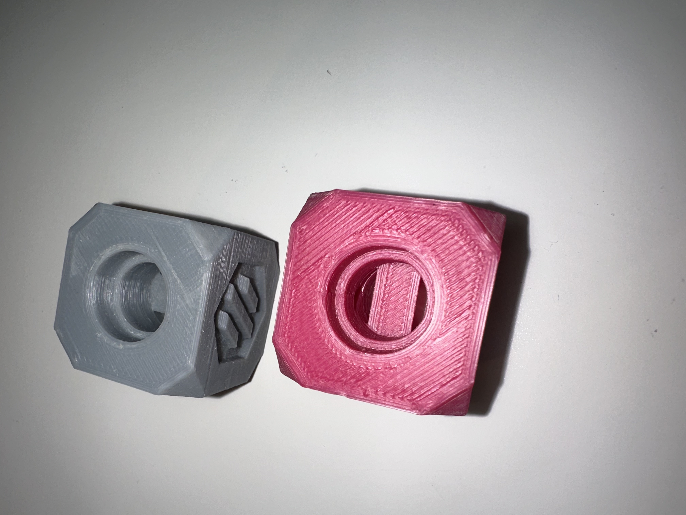
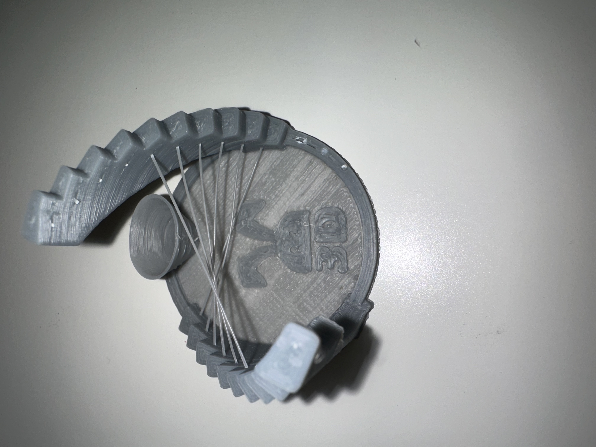
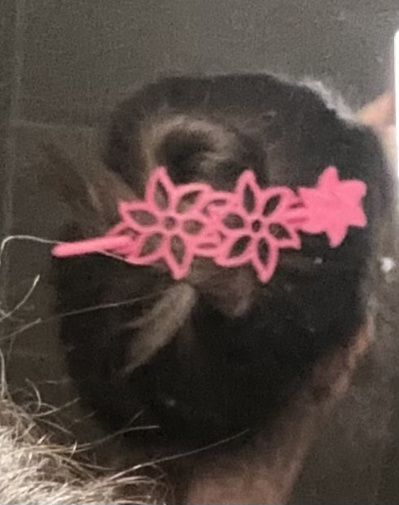
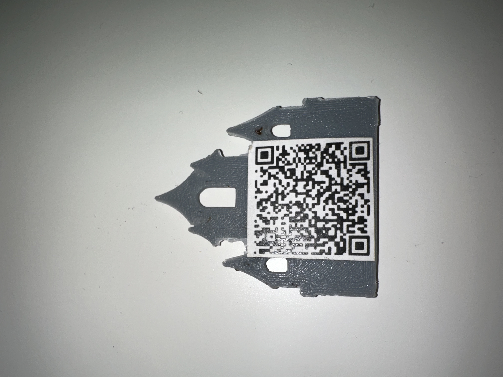
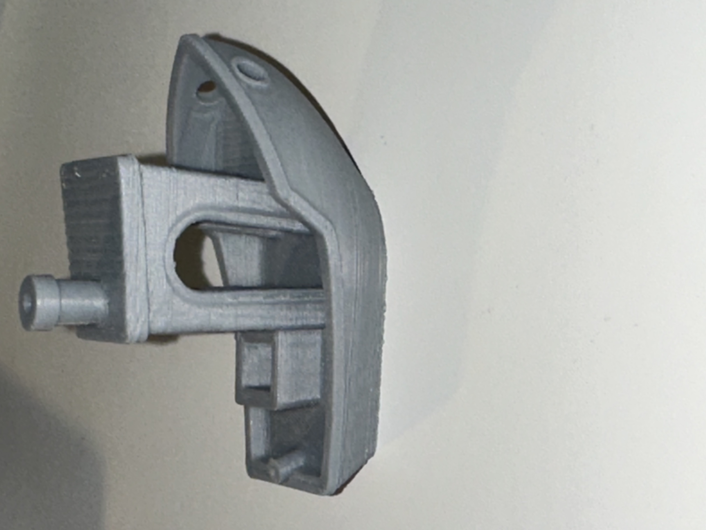
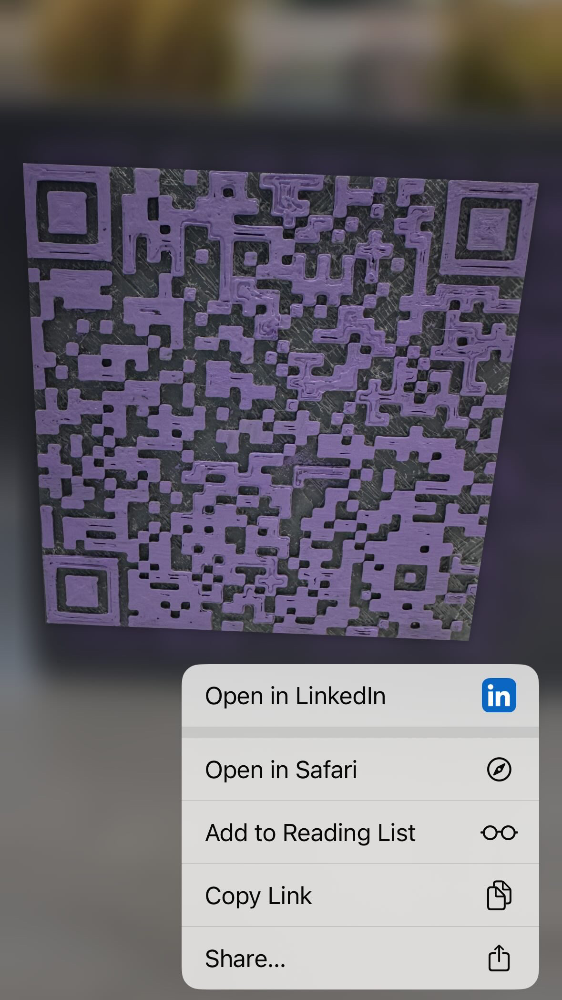

Welcome to my corner of the world wide web. You've landed on the digital archive of Satinee Ghiulezian—a collection of things I've made (including this site), sometimes using nothing but paperclips and rubber bands. Let me share with you the delight of creating something out of nothing.
About My Name
Satinee is a twist on Satenig, my actual name, but one no one ever calls me. Every year on the first day of school, I'd introduce myself to my teachers and classmates: "Hi, my name is Saten-IG, but everyone calls me Satin-EE." I intentionally emphasized the -IG and -EE to make sure nobody made the mistake of calling me Satenig. Even though it honored my late grandmother, who died before my parents even met, Satinee always felt more naturally me.
Both names come from the Armenian word սաթ (sat), which has a double meaning: amber (the fossilized resin) or electrum (the natural gold-silver alloy). Satenig is the diminutive meaning "little amber" or "little electrum." Satinee means "made of amber" or "made of electrum.".
In elementary school we were asked to complete family trees—a moot project in my opinion for students in Armenian school, since most of us couldn't trace our families back more than our great-grandparents. I was always envious of my classmates who grew up with their grandparents and heard stories passed down about their great-grandparents.
In connection with family trees, we were encouraged to explore the meaning of our last names. Most Armenian last names end in -ian or -yan, meaning "family of" whatever name precedes it. It could describe a trade that was in the family, like Smith, or the name of the patriarch. It's a relic of when Armenians lived within Turkish borders and were identified for tax purposes. My last name—Ghiulez is Turkish for "rose-face." For years I pondered what that name could mean. It wasn't like my friends who could point to the "Der" prefix in their last name and say there was a priest in their lineage, or the ones whose last names were of famous Armenian towns.
I think I was in college when I realized the prominent, persistent redness on my face was actually rosacea. And that's when I made the connection—like puzzle pieces fitting together. I realized that my brother and I, along with our father and late grandfather, suffered from an affliction that rendered its sufferers with a rosy complexion. Rose-face. Suddenly I was like Harry staring in the Mirror of Erised, discovering that he had his mother's eyes. I don't have their stories, but I have their face.
How I Got Here
I chose engineering because of math and science—like every other engineer and their cousin. In those days before starting college, I dreamt about becoming a roller coaster designer, but I still debated between pursuing civil or mechanical engineering. By some stroke of luck, I overheard during orientation that Mechanical and Aerospace Engineering majors didn't need to take the same writing course as the rest of the university. Back then, every undergraduate student took WRIT 140—a class required to take in sync with a writing-heavy general education course. It was every engineer's dread except for AME (aerospace and mechanical) because they had the option to take WRIT 130, a course uncoupled from general education with the freedom to write about anything. So of course, I chose mechanical engineering as my major, if only to survive one semester of writing. If I could become a roller coaster designer, well, that would be an added fringe benefit.
If writing was why I chose mechanical engineering, Solidworks was why I stayed. With absolutely no exposure to what engineering was in high school, the discovery of a 3D modeling program that didn't require actual drawing skills floored me. And yet I barely passed the advanced class in solid modeling—bad luck and timing. But it was in this class I remember imagining modeling IKEA pieces and creating assemblies out of my components.
Once I graduated, I imagined myself as a design engineer spending my days modeling components in Solidworks. I ended up at an aerospace division of a filter manufacturer as a work instructions author. When I started, I had no idea what manufacturing entailed. Walking into the interview as my future boss pointed out machine after machine, I couldn't help but feel like I was in Disneyland and I couldn't wait to tear things apart.
I wrote work instructions and implemented training solutions for the new work instruction software. At first, I would print long lists of Excel files for status reports and to find out which part numbers needed work instructions. One day, struggling to figure out how to accomplish a task in Excel, I asked a coworker for help. He showed me how to record a macro. After that, all project timelines, work instruction updates, you name it became automated using VBA. Sure, I might have been able to accomplish whatever it was manually in a fraction of the time, but with VBA I was learning something new and I could reuse the code however many times I wanted.
Automating with VBA led me to building a database of tools in Access. Eventually, I led the implementation of electronic work instructions for 80% of the plant floor, resulting in about $100,000 in cost reductions.
A few years later, I came back to the same company in a more senior role. I reduced scrap by 80% on a single part number through root cause analysis. But the environment had become toxic—my boss wasn't listening to my ideas. So I started building physical proof of concepts. I saw a reel on Facebook and thought, "I can make that at work"—built a cardboard conveyor to test if we could create something cheap for the filter fab lines. I built a LEGO prototype to demonstrate how we could automate an epoxy dispenser with a cheap XY plotter. Eventually we implemented it—I assembled and set everything up except the code.
What I really enjoyed during this time was troubleshooting and repairing the equipment. I discovered a straightforward PM issue that resolved a lot of heartache: an epoxy dispense machine had a pump pushing epoxy from a five gallon container to a nozzle. Every time the pump was left on, air accumulated, making it impossible for the epoxy to flow. Sometimes epoxy would start dispensing randomly—once dumping all over the operations and plant managers after hours. The fix? Turn off the air when the pump wasn't in use.
That mechanical problem-solving—figuring out why machines weren't working and fixing them—drew me to an Equipment Engineer role at Spectrolab. There, I worked with MOVPE fab equipment, troubleshooting and maintaining semiconductor manufacturing tools. The data volume was too much for VBA to handle, so I taught myself Python. I implemented solutions that increased MOVPE throughput by 20% and received a Meritorious Invention Disclosure Award for designing a solution to reduce equipment downtime in cold weather. There was still paperwork—documenting procedures—but it felt rewarding because it was connected to tangible fixes.
Writing
The Pomegranate Tree
There was once a beautiful tree
With branches so weighed down
From the fruit it bore
That it stretched from sea to sea
The tree was rooted in a land
Fought for, fought over, fought on
Over the centuries it suffered and bled
As its people toiled and slowly fled
An unending winter swept the tree
Its branches withered and dried
Its fruit split and scattered
Spilling all their seeds far and wide
All that remains of that tree now
Is the root, a mere remnant of what it was
Just like the land it stands upon
Searching for sustenance, struggling to survive on its own
The once scattered seeds have blossomed into trees
Their branches growing and spreading
Yearning for each other
For only together could the trees save their mother root
I also write fanfiction. You can find my stories at FanFiction.Net.
Philosophy
Front-Load the Effort
I'd rather spend hours building a solution once than waste minutes on the same task forever. There's satisfaction in saving time, but more than that—an automated task is one where I don't have to worry about mistakes made from boredom. My boss at Spectrolab called it NRE: Non-Recurring Engineering. It's a principle I'm learning more about in systems engineering—spend the time once, benefit forever.
Examples: Electronic work instructions that saved $100,000 plant-wide. Data automation using VBA, then Python when the scale demanded it. Custom jigs and fixtures designed once, used in production repeatedly. A Voron 2.4 3D printer I spent months building that now gives me on-demand precision manufacturing capability.
Use What You Have
Cardboard conveyors. LEGO and highlighter automation prototypes. PowerPoint for making flyers and logos. Sometimes the right tools speak to me from the prototype—I build something scrappy to figure out what I actually need. Sometimes whatever I have is never intended to be anything beyond the prototype, just something I can use to come up with the right tools. And honestly? Using something like PowerPoint to make a logo is so satisfying. It impresses people because they don't expect it.
Always Better
There's never "good enough," but there's always better. I look at things that are working fine and ask, "How could this be better?"
Before I left Spectrolab, I replaced our data viewing tool with AI-aided code generated in Python using the company ChatGPT. The old tool used native software data processing methods. The new one used dataframes. It was much faster and saved people time they didn't know they were losing. That's the thing—sometimes you don't know you're wasting time until someone shows you there's a better way.
"Good enough" has never sat right with me. I'm not chasing perfection—it doesn't exist, so why waste time and effort on it. But there's always another way to look at a problem, another angle to try. The question isn't "does it work?" It's "could it work better?" And usually, the answer is yes.
Projects
Voron 2.4 3D Printer
At Spectrolab, I asked my boss one day if he had recommendations for buying a 3D printer. He said, "I have one better—build one." He suggested the Voron.
All Vorons are open source and made up of printed components. The beauty of it: once you have one Voron, it can print the parts for the next one. My boss offered to print the plastic parts I needed with his Voron.
I started ordering components in November 2021. I printed my first functional pieces in July/August 2022. Then for 18 months, my printer sat covered in painter's tarp while our kitchen was under construction because of a slab leak.
My goal was to print all the non-functional components myself—true self-replication. But not having a proper enclosure made that difficult. Also, my prints kept failing. I ruined 3 or 4 hotends simply by having the thermistor wire break mid-print.
Eventually, I realized the coating and shrink sleeve protecting the thermistor wasn't enough to keep it from breaking from all the movements the extruder made during printing. I found thermistors with sleeving made out of fiberglass so that it could bend without breaking.
The printer works very well now. But there are still bugs. The frame isn't perfectly square—building tall prints causes the gantry to jam going up. I constantly get bed heater errors. These are annoying bugs that make me want to take the printer apart and rebuild it properly.
But it works. And I've learned more about mechanical systems, electrical troubleshooting, and iterative problem-solving from building and fixing this printer than I ever would have from buying one off Amazon.







My first ever print (didn't go as planned!), calibration cubes for tuning the printer, test pieces, a functional flower hairpin I printed last minute for a party and still wear, a castle I designed with integrated QR code (too small to print clearly, so I improvised with a LinkedIn sticker on the back), the requisite Benchy, and a functioning QR code (try it!)ten.
Upstream Contamination by Floating Particles
USC Senior Design Project
For my senior design capstone at USC, my team chose a counterintuitive fluid mechanics project from the professor's curated list: could floating particles actually travel upstream against both gravity and water flow?
The phenomenon, first observed by Sebastian Bianchini while pouring tea, seemed impossible. But the physics checked out: the Marangoni Effect—where surface tension gradients create forces strong enough to pull particles upward—could make it happen. We just had to prove it.
The "Perfect" Solution That Failed
The teaching assistants insisted we build a closed-loop system with precise flow control. I spent most of the semester in the machine shop, carefully fabricating what I thought would be the perfect acrylic channel—smooth surfaces, exact dimensions, controlled geometry.
It didn't work.
The flow was turbulent. The waterfall height was inconsistent. The particles went nowhere.
The Solution That Worked
Frustrated and running out of time, my teammate grabbed a plastic water bottle, cut it in half, and duct-taped it to our containers.
It worked immediately.
The particles floated upstream. The TAs didn't believe it would work until they saw it with their own eyes—chalk particles traveling up a waterfall, defying everything that seemed intuitive about fluid flow.
Building the Tools We Needed
To prove why it worked, we needed to measure surface tension. Commercial tensiometers cost thousands of dollars. We didn't have that budget.
So I built one from a drinking straw I picked up from Coffee Bean, a syringe from the pharmacy. Total cost: about $3.
The DIY tensiometer worked. We measured:
Clean water: 72 mN/m
Contaminated water: 37-47 mN/m
That gradient—that difference in surface tension—was enough to overcome gravity and pull particles upstream through the Marangoni Effect.
The Results
Successfully replicated upstream particle contamination. Measured and quantified surface tension gradients driving the phenomenon. Documented particle travel distances at different flow rates. Proved that sometimes the scrappiest solution is the right solution.
After final grades were submitted, our professor selected our project for the end-of-semester poster showcase.
What I Learned
This project taught me something more valuable than fluid mechanics: perfect isn't always better. The "proper" machined channel failed. The duct-taped water bottle worked. Sometimes the constraint isn't the engineering—it's knowing when to stop over-engineering.
And when you can't afford the tools you need, you build them yourself.